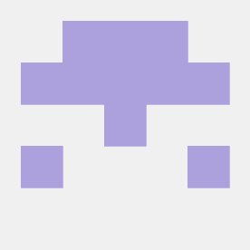

Desarrollo web y bases de datos
HTML, CSS y JavaScript. Normalización y modelado de bases de datos.
Buenos Aires, Argentina
Soy Ezequiel, estudiante de 7.º año de Escuela Técnica con orientación en Informática, con el objetivo de mejorar mi carrera profesional y aportar mis conocimientos en los problemas que se me plantean.

Cursando el último año de la escuela secundaria técnica, enfocado en el diagnóstico de hardware, infraestructura de redes y desarrollo de software.
Mi formación combina el mantenimiento de equipamiento e instalaciones físicas (redes, armado de PCs, Uso de Softwares) con la programación de sistemas y gestión de bases de datos. Esta visión integral me permite abordar problemas informáticos de manera optima.
- Actualmente en búsqueda de mi primera oportunidad laboral o pasantía técnica para aplicar mis conocimientos en proyectos reales.
HTML, CSS y JavaScript. Normalización y modelado de bases de datos.
Ensamblado, diagnóstico y reparación de PCs y netbooks.
Cableado estructurado, redes locales e instalación de cámaras de seguridad (CCTV).
Instalación de sistemas windows y linux, con experiencias en distribuciones como EndeavourOS, Debian, Ubuntu y Cachy linux
Diagnóstico, limpieza y solución de fallas de hardware y software en PCs y netbooks.
Diagnóstico · Hardware · Sistemas operativos
Montaje y configuración de redes CCTV: cámaras, cableado y conexiones de red local.
CCTV · Cableado estructurado · Redes locales
Piezas y prototipos con impresión 3D usando programas de CAD como FUSION 360 y corte láser.
Impresión 3D · Corte láser
Herramienta para resolver problemas de transporte con esos dos métodos.
JavaScript
Ver repoPrueba para llevar la cuenta de las 200 horas de prácticas profesionalizantes.
JavaScript
Ver repo